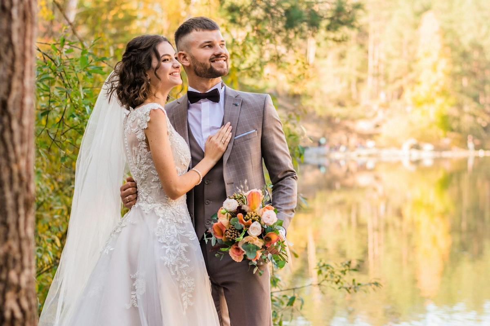
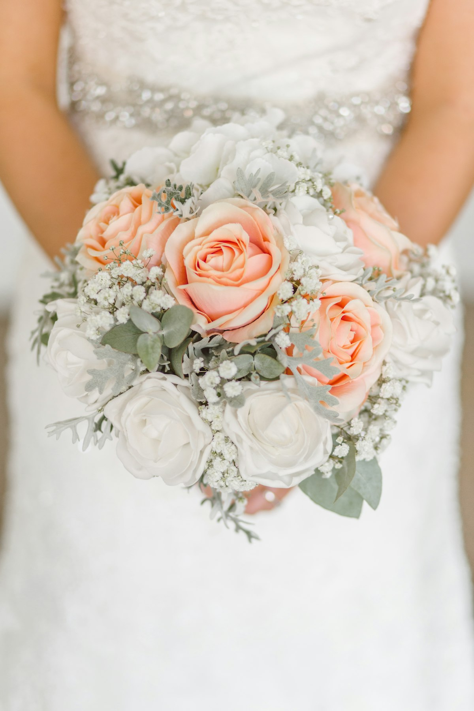
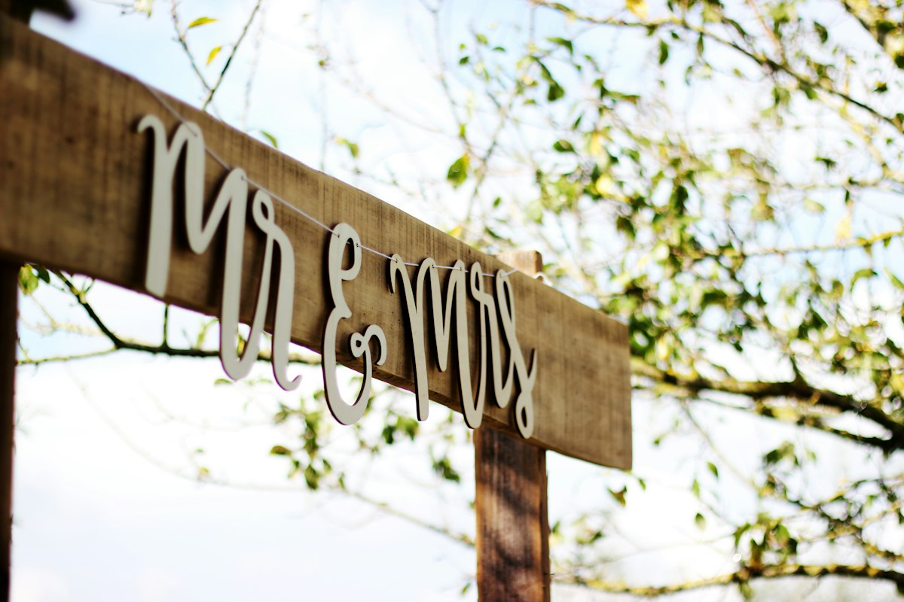
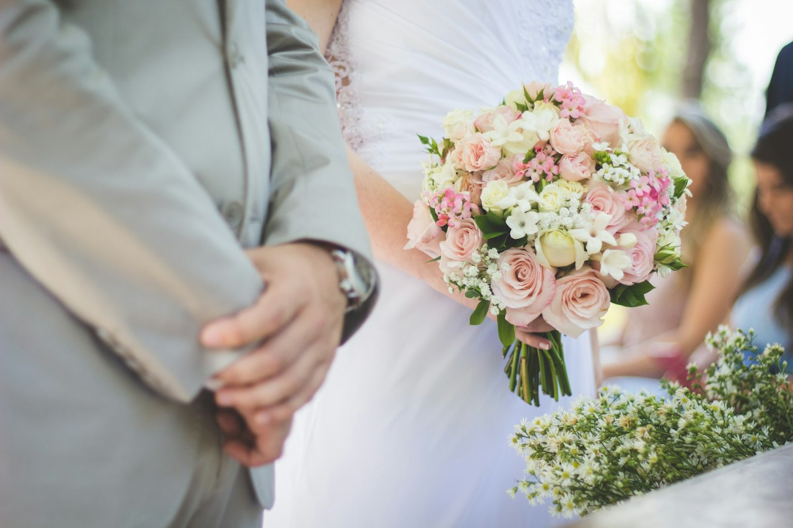
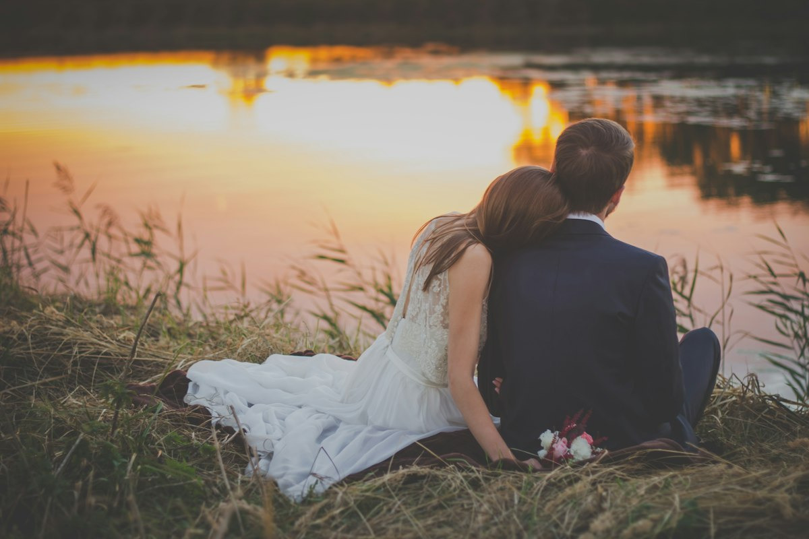

Bodas, XV años y eventos familiares en Chimalhuacán. Abierto todos los días de 11:00 a 20:00.
★★★★☆ 4.1 · 43 opiniones en Google





Fotografías de stock para la propuesta; se reemplazarán por trabajos reales del estudio.
Foto y video para cada celebración.
Foto, video y foto grande de tu día.
Sesión, ceremonia y fiesta.
Recuerdos familiares con detalle.
Tomas cuidadas y edición de calidad.
Retratos individuales, de pareja y familia.
Impresión enmarcada para tu hogar.
Hacemos cada trabajo como si fuera para nosotros.
En Fotoestudio Espacio cuidamos cada toma, cada pose y cada movimiento para que tu historia quede plasmada con calidad y calidez. Atención amable y profesional, de principio a fin.
4.1 de 5 · 43 opiniones en Google
★★★★★“El trabajo quedó excelente, fotos y video. Todo quedó muy lindo.”Cliente en Google
★★★★★“La calidad de las fotos y videos es muy buena, muy recomendable, y la atención es muy amable.”Cliente en Google
★★★★★“Trabajo y atención súper profesional; cada toma de nuestra boda plasmó toda nuestra felicidad.”Cliente en Google
★★★★★“El personal es muy amable y profesional, el trabajo impecable. Vale la pena lo invertido.”Cliente en Google
Extractos de reseñas públicas de Google, editados por brevedad.
Lo que más nos preguntan.
Sí, abrimos todos los días de 11:00 a 20:00, incluidos sábados y domingos.
Sí, cubrimos bodas con fotografía, video y foto grande enmarcada.
XV años, bautizos, primeras comuniones, graduaciones y sesiones familiares.
Llámanos o escríbenos por WhatsApp con la fecha de tu evento y te enviamos tu cotización; el apartado se confirma con anticipo.
Sí, puedes escribirnos a fotoestudioespacio115@gmail.com.
Visítanos o escríbenos.
DirecciónAv. del Peñón 42, Col. Xochiaca, 56350 Chimalhuacán, Edo. Méx.
Teléfono / WhatsApp55 2228 4228
Correofotoestudioespacio115@gmail.com
HorarioLunes a domingo 11:00–20:00